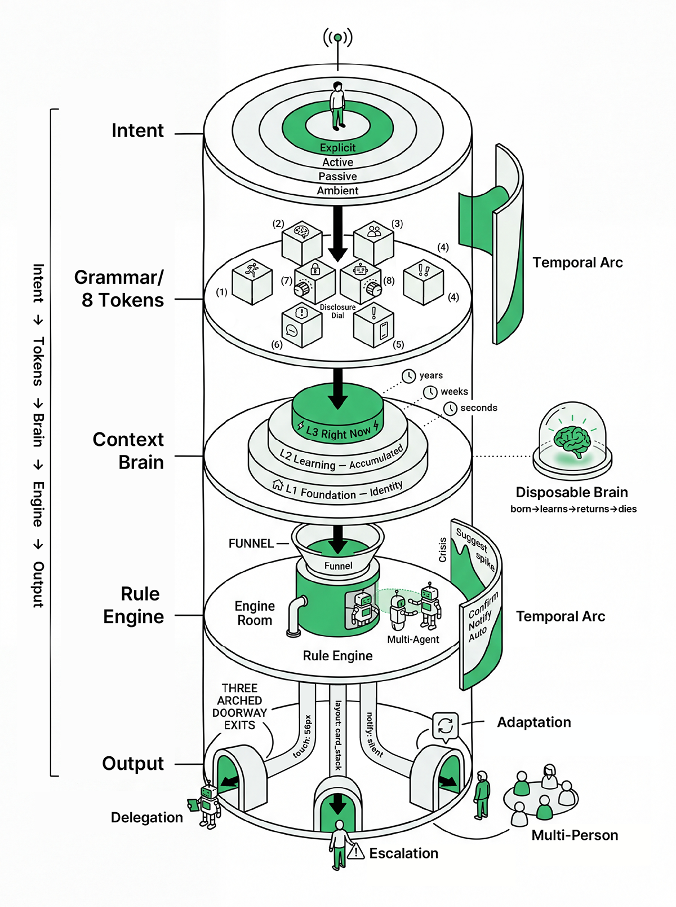
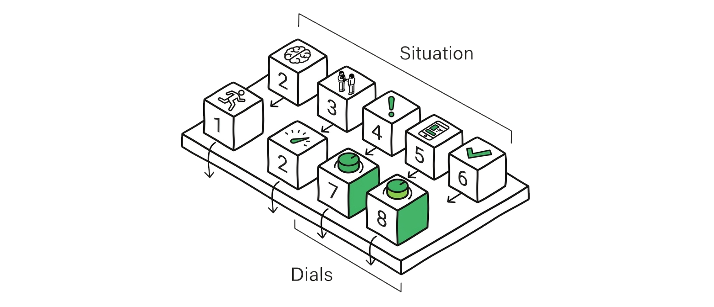
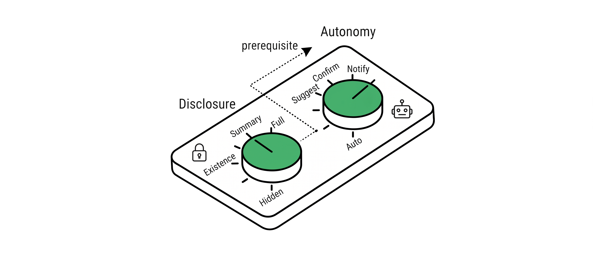
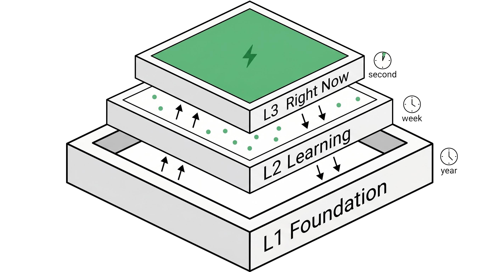
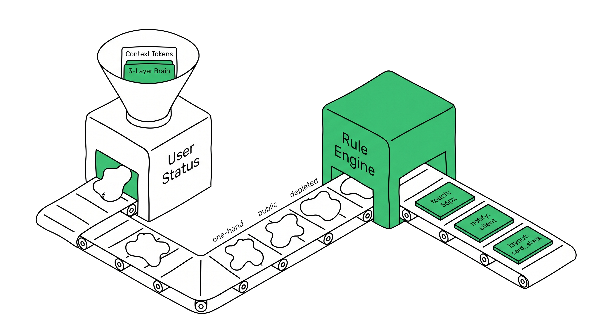
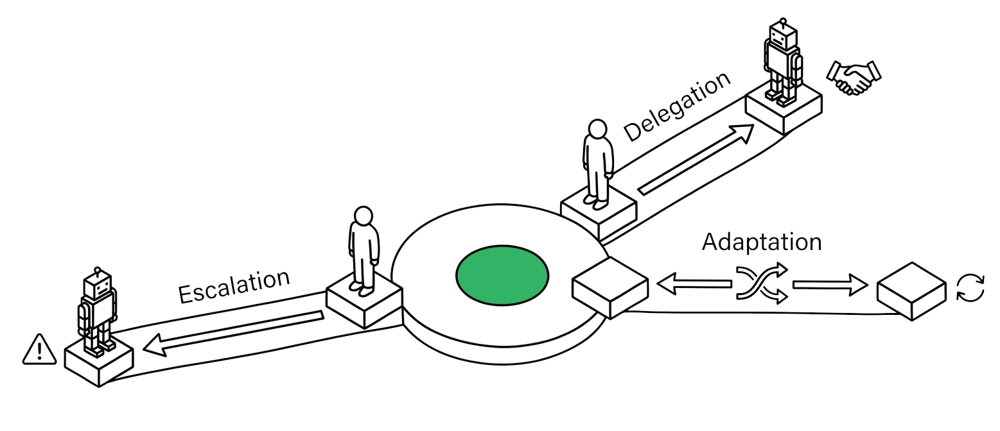

Architecture
How It Works
Five stages. One pipeline. Context enters as raw signal and exits as adapted behavior.

Intent
What the user wants
Explicit or implicit. Sometimes the user states it directly. Sometimes the system infers it from the intersection of tokens and memory. Intent is the starting signal.
 Deep dive →
Deep dive →
8 Context Tokens
Six situation tokens. Two relationship dials.
Physical State. Cognitive Load. Social Exposure. Priority Weight. Form Factor. Feasibility. Plus two dials that govern the relationship: Autonomy Dial and Disclosure Dial. Together they describe who you are right now.


Deep dive →Context Brain
Three layers of memory
Identity holds who you are. Accumulated Learning holds what the system has observed over time. Right Now holds what is true this moment. Memory is not unique to Context Grammar — the structured design language on top of it is.

Deep dive →Rule Engine
Context becomes design rules
Tokens and memory feed into a rule engine that produces concrete design decisions. What to show, what to hide, how much autonomy to grant, which modality to use.

Deep dive →Response
Three directions of adaptive behavior
Every response falls into one of three categories. Delegation — the system handles it. Escalation — the system asks for human input. Adaptation — the system adjusts its presentation. These are not abstractions. They map directly to AX patterns you can implement.
